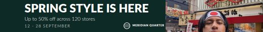

Leaderboard 728x90
728×90 ATENCION
Revision:
- the photograph cannot bleed at this aspect without cutting the subject: degraded to a panel
| headline | 32px | 1 ln | 15.24 / 3.0 |
| subhead | 14px | 1 ln | 15.24 / 4.5 |
| support | 11px | 1 ln | 15.24 / 4.5 |
Decisiones (13)
- at 8.1:1 no bleed crop contains the focal region above the minimum subject scale: it would need 2322px of height, or 18784px of width, and the source has 3648px. The photograph degrades to a side panel of 270x90 (3.0:1) and the brand field is promoted; the subject is still tight even inside the panel
- 2 face regions barred to text, each with a 25% margin: with several heads, barring the focal region is not enough
- subhead: the legibility floor cut the size contrast to 2.29:1 against 3.07:1 in the master, so the hierarchy is re-expressed in weight (400 to 300)
- support: the legibility floor cut the size contrast to 2.91:1 against 4.60:1 in the master, so the hierarchy is re-expressed in weight (900 to 300)
- degradation ladder applied: tighten_leading -> weight_for_size -> drop_legal
- text placed at (68,9) by dense search over the cost field: cost 0.007 on a 0-1 scale
- headline: tipografia invertida a claro, contraste 15.24:1
- subhead: tipografia invertida a claro, contraste 15.24:1
- support: tipografia invertida a claro, contraste 15.24:1
- legal dropped by the degradation ladder
- lockup scaled to 0.50x instead of 0.25x: at the previous scale the wordmark fell to 3.8px, under its floor of 7.5px
- logo in the light variant: against this background the ink measured 1.00:1
- lockup at a uniform 0.50x scale, 111px wide, clear-space 8px, lowest-cost corner
leader_728.svg · recorte 3648×1216px · 973 ppi · coste 0.007

{kind=link}
{kind=link}
{kind=link}
{kind=link}